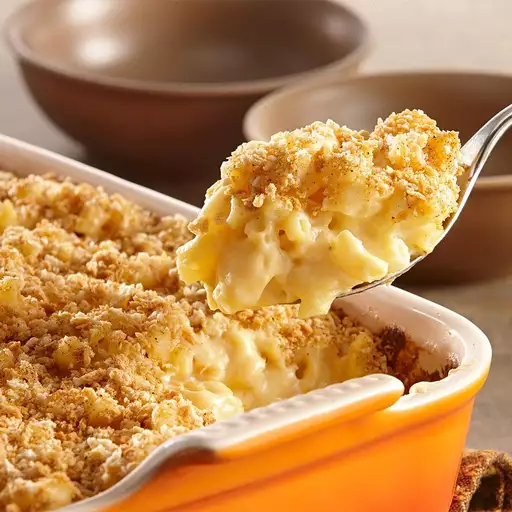

Home
Macaroni

Description
Macaroni and cheese is the ultimate American comfort food. In this recipe, tender macaroni is coated in a rich, creamy cheese sauce with a golden crumb topping. Always satisfying and irresistibly indulgent.
Ingredients
- 1 package elbow macaroni
- 6 tablespoons butter
- 6 tablespoons all-purpose flour
- 2 tablespoons McCormick ground mustard
- 1 1/2 teaspoons McCormick coarse ground black pepper
- 1 teaspoon McCormick garlic powder
- 1 teaspoon salt
- 4 cups milk
- 6 cups shredded sharp Cheddar cheese
- 1 1/2 cups panko bread crumbs
- 1 teaspoon McCormick paprika
Steps
- Preheat the oven to 400 degrees F (204 degrees C). Grease a 9x13-inch baking dish.
- Bring a large pot of lightly salted water to a boil. Cook elbow macaroni in the boiling water, stirring occasionally, until tender yet firm to the bite, about 8 minutes. Rinse under cold water. Drain well.
- Melt butter in the same pot on medium heat; sprinkle with flour, ground mustard, black pepper, garlic powder, and salt. Cook and stir until well blended, about 2 minutes. Gradually stir in milk; cook, stirring constantly, until sauce begins to thicken, about 3 minutes.
- Stir in cheese until melted and smooth. Off heat, gently stir in macaroni until coated. Transfer to the prepared baking dish. Combine panko and paprika; evenly sprinkle over top.
- Bake in the preheated oven until bubbly and golden brown on top, 25 to 30 minutes. Let stand 5 minutes before serving.